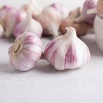
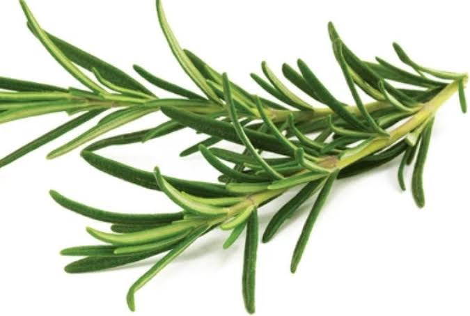

 <!DOCTYPE html>
<html>
<head>
	<title>PSALMS HERBS AND SPICES GROWERS</title>
</head>
<body>
	<!DOCTYPE html>
	<html>
	<style>
		body
	</style>
	</head>
	<body style="background-color: lightblue;">
		
		<header>
			
		</header>
	
	</body>
	</html>
	<h1>internal links</h1>
	<a href="home.html">home page</a>
	<a href="about US.html">about us</a>
	<a href="contact.html">contacts</a>

	<p sytle="color:green;">WELCOME TO MY WEBSITE </p>
	<p>LETS PLANT HERBS AND SPICES AND EXPLORE THE BEAUTY OF FRAGRANCE</p>
	<p style ="color: orange">MISION: To be the leading suppliers of herbs and spices in Uganda</p>
	<p style="color: pink">VISION: To inspire a thousand of people into the business</p>
	<p>OBJECTIVES</p>
	<UL>
		<LI>To improve on the on the taste of foods</LI>
		<li>To do away with diseases</li>
		<li>To educate people about the benefits of herbs and spices</li>
		<li>To appreciate organically God made herbs</li>
		<p style="color: purple">TYPES OF HERBS AVAILABLE</p>
		
		              
		              
		              
		<UL>
			<LI>Basil</LI>
			<LI>Oregano</LI>
			<LI>Stevia</LI>
			<LI>Cinnamon</LI>
			<LI>Ginger</LI>
			<LI>Lavender</LI>
			<LI>Rosemary</LI>
			<li>Mint</li>
			<li>Cloves</li>
			<li>Sage</li>
			<LI>Dill</LI>
			<li>Prsley</li>
			<li>Thyme</li>
			<li>Lemon grass</li>
			
			     <LI>NB; Herbs are are plants with leaves, seeds,or flowers used for flavouring, food, medicine or perfume"</LI>

			<p style="color: red">HOWEVER, SOME HERBS CAN WORK AS SPICES AND SOME SPICES CAN WORK AS HERBS</p> 

			<p style="color: green">TYPES OF SPICES AVAILABLE</p> 
			<UL>
				
				<i
				<i
			<LI>Chives</LI> 
			<li>Rosemary</li> 
			<LI>Tumeric</LI>
			<li>Carrots</li>
			<li>Cloves</li> 
			<LI>Rue</LI>
			<li>Onions</li>
			<li>Garlic</li>
			<li>Lemon verbena</li>
			<li>Cinnamon</li>
			<li>Ginger</li>
			<li>Lavenda</li>
			    <p style="color: red">A spice is an additive used to flavor, colorise food to stimulate appetite</p>
			    <p style="color: blue">USES OF SPICES</p>
			  <UL>
			  	<LI>Food colorisation</LI>
			  	<LI>Stimulates</LI>
			  	<li>Food flavorisation</li>
			<p style="color: yellow">USES OF HERBS</p> 
			<ul>
			<li>Heals diseases</li>	
			<li>flavors medicine</li>
			<li>used in making perfumes</li>
     

	

</body>
</html>